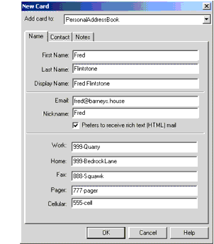

Esta sección usa XSLT para convertir una estructura de datos arbitraria en XML.
Aquí tiene un resumen del proceso:
Modificar un programa existente que lee los datos, para hacerle generar eventos SAX. (Si ese programa es un analizador real o simplmente un filtro de datos de alguna clase es irrelevante por el momento).
Usar el "analizador" SAX para construir un SAXSource para la transformación.
Usar el mismo objeto StreamResult que se creó en el pasado ejercicio para visualizar los
resultados. (Pero tenga en cuenta que puede crear fácilmente un objeto DOMResult para
crear un DOM en memoria).
Conecte la fuente al resultado usando el objeto transformador para hacer la conversión.
Para principiantes, necesita un conjunto de datos que quiera convertir y un programa capaza de leer los datos. Las dos siguientes secciones crean un fichero de datos simple y un programa que lo lee.
Este ejemplo usa el conjunto de datos de una libreta de direcciones, PersonalAddressBook.ldif. Si
no lo ha hecho ya,
descargue los ejemplos XSLT y descomprímalos dentro del directorio
install-dir/jaxp-1_4_2-release-date/samples. El fichero mostrado aquí
fue producido crean una nueva libreta de direcciones en Netscape Messenger, dándole algunos datos ficticios
(una tarjeta de dirección), y después exportándola en el formato Formato de Intercambio de Datos LDAP (LDIF).
Contenida en el directorio xslt/data después de que descomprima los ejemplos XSLT.
La siguiente Figura muestra la entrada de la libreta de direcciones que fue creada.
Figura Entrada de la Libreta de Direcciones

Exportar la libreta de direccoines produce un fichero como el que se muestra a continuación. Las partes del fichero que nos interesan se muestran en negrita.
dn: cn=Fred Flintstone,mail=fred@barneys.house
modifytimestamp: 20010409210816Z
cn: Fred Flintstone
xmozillanickname: Fred
mail: Fred@barneys.house
xmozillausehtmlmail: TRUE
givenname: Fred
sn: Flintstone
telephonenumber: 999-Quarry
homephone: 999-BedrockLane
facsimiletelephonenumber: 888-Squawk
pagerphone: 777-pager
cellphone: 555-cell
xmozillaanyphone: 999-Quarry
objectclass: top
objectclass: person
Tenga en cuenta que cada línea del fichero contiene un nombre de variable, dos puntos y un espacio seguido por
un valor para la variable. La variable sn contiene el apellido de la persona (apellido) y la
variable cn contiene el campo DisplayName de la entrada de la libreta de direcciones.
El siguiente paso es crear un programa que analize los datos.
Nota — El código descrito en esta sección está en AddressBookReader01.java, que se
encuentra en el directorio xslt después de que descomprima los
ejemplos XSL dentro del directorio
install-dir/jaxp-1_4_2-release-date/samples.
El texto para el programa se muestra a continuación. Es un programa extremadamente simple que ni siquiera se repite para múltiples entradas porque, después de todo, es sólo una demostración.
import java.io.*;
public class AddressBookReader01 {
public static void main(String argv[]) {
// Check the arguments
if (argv.length != 1) {
System.err.println("Usage: java AddressBookReader01 filename");
System.exit (1);
}
String filename = argv[0];
File f = new File(filename);
AddressBookReader01 reader = new AddressBookReader01();
reader.parse(f);
}
// Parse the input file
public void parse(File f) {
try {
// Get an efficient reader for the file
FileReader r = new FileReader(f);
BufferedReader br = new BufferedReader(r);
// Read the file and display its contents.
String line = br.readLine();
while (null != (line = br.readLine())) {
if (line.startsWith("xmozillanickname: "))
break;
}
output("nickname", "xmozillanickname", line);
line = br.readLine();
output("email", "mail", line);
line = br.readLine();
output("html", "xmozillausehtmlmail", line);
line = br.readLine();
output("firstname","givenname", line);
line = br.readLine();
output("lastname", "sn", line);
line = br.readLine();
output("work", "telephonenumber", line);
line = br.readLine();
output("home", "homephone", line);
line = br.readLine();
output("fax", "facsimiletelephonenumber", line);
line = br.readLine();
output("pager", "pagerphone", line);
line = br.readLine();
output("cell", "cellphone", line);
}
catch (Exception e) {
e.printStackTrace();
}
}
}
Este programa contiene tres métodos:
main
El método main obtiene el nombre del fichero desde la línea de comandos, crea una
instancia del analizador, y lo configura para que funcione analizando el fichero. Este método
desaparecerá cuando convertamos el programa en un analizador SAX. (Esa es una razón para colocar el
código de análisis en un método separado).
parse
Este método opera en el objeto File enviado por la rutina main. Como ouede ver, es muy
sencillo. La única concesión a la eficiencia es el uso de un BufferedReader, que puede
volverse importante cuando comienze a operar con ficheros grandes.
output
El método output contiene la lógica para la estructura de una línea. Toma tres argumentos. El primer
argumento da al método un nombre a visualizar, de forma que pueda emitir html como un
nombre de variable, en vez de xmozillausehtmlmail. El segundo argumento da el nombre de la
variable almacenada en el fichero (xmozillausehtmlmail). El tercer argumento da la línea
que contiene los datos. Luego, la rutina elimina el nombre de la variable desde el principio de la
línea y genera el nombre deseado, más los datos.
AddressBookReader01
samples.
% cd install-dir/jaxp-1_4_2-release-date/samples.
Descargue los ejemplos XSLT pulsando este enlace y descomprímalos dentro del
directorio install-dir/jaxp-1_4_2-release-date/samples.
xslt.
cd xslt
AddressBookReader01.
Teclee el siguiente comando:
% javac AddressBookReader01.java
AddressBookReader01 sobre un fichero de datos.
En el caso de abajo, AddressBookReader01 se ejecuta sobre el fichero
PersonalAddressBook.ldif mostrado arriba, encontrado en el directorio
xslt/data después de que ha descomprimido el paquete de ejemplos.
% java AddressBookReader01 data/PersonalAddressBook.ldif
Verá la siguiente salida:
nickname: Fred
email: Fred@barneys.house
html: TRUE
firstname: Fred
lastname: Flintstone
work: 999-Quarry
home: 999-BedrockLane
fax: 888-Squawk
pager: 777-pager
cell: 555-cell
Esto es un poco más legible que el fichero mostrado en Crear un Fichero Simple.
Esta seccióm muestra cómo hacer que el analizador genere eventos SAX, de forma que pueda usarlos como la base
para un objeto SAXSource en una transformación XSLT.
Nota — El código descrito en esta sección está en AddressBookReader02.java, que se
encuentra en el directorio xslt después de que descomprima los
ejemplos XSLT dentro del directorio
install-dir/jaxp-1_4_2-release-date/samples.
AddressBookReader02.java está adaptado de AddressBookReader01.java , por lo que
aquí solo se discutirán las diferencias de código entre los dos ejemplos.
AddressBookReader02 requiere las siguientes clases remarcadas que no fueron usadas en
AddressBookReader01.
import java.io.*;
import org.xml.sax.*;
import org.xml.sax.helpers.AttributesImpl;
La aplicación también extiende XmlReader. Este cambio convierte la aplicación en un analizador que
genera los eventos SAX apropiados.
public class AddressBookReader02 implements XMLReader { /* ... */ }
A diferencia del ejemplo AddressBookReader01, esta aplicación no tiene un método main.
Las variables globales siguientes serán usadas más tarde en esta sección:
public class AddressBookReader02 implements XMLReader {
ContentHandler handler;
String nsu = "";
Attributes atts = new AttributesImpl();
String rootElement = "addressbook";
String indent = "\n ";
// ...
}
El ContentHandler de SAX es el objeto que obtendrá los eventos SAX generados por el analizador.
Para convertir la aplicación en un XmlReader, la aplicación define un método
setContentHandler. La variable handler contendrá una referencia al objeto que se envía cuando se
invoca setContentHandler.
Cuando el analizador genera eventos SAX de elemento, necesitará proporcionar el espacio de nombres y la información de atributos. Ya que esta es una aplicación simple, define valores nulos para ambos.
La aplicación también define un elemento raíz para la estructura de datos (addressbook) y
configura una cadena de sangría para mejora la legilibilidad de la salida.
Además, el método de análisis se modifica para que tome un InputSource (en lugar de un
File) como argumento y tenga en cuenta las excepciones que puede generar:
public void parse(InputSource input) throws IOException, SAXException
Ahora, en vez de crear una nueva instancia FileReader como se hizo en
AddressBookReader01, el lector es encapsulado por el objeto InputSource:
try {
java.io.Reader r = input.getCharacterStream();
BufferedReader Br = new BufferedReader(r);
// ...
}
Nota — La siguiente sección muestra como crear el objeto fuente de entrada y lo que se pone en él
será, de hecho, un lector almacenado en un búffer. Pero el AddressBookReader podría ser usada
por algún otro, en algún lugar de la línea. Este paso asegura que el procesamiento será eficiente,
independientemente del lector que se le dé.
El siguiente paso es modificar el método parse para generar eventos SAX para el inicio del documento y el elemento raíz. El siguiente código remarcado hace eso:
public void parse(InputSource input) {
try {
// ...
String line = br.readLine();
while (null != (line = br.readLine())) {
if (line.startsWith("xmozillanickname: "))
break;
}
if (handler == null) {
throw new SAXException("No content handler");
}
handler.startDocument();
handler.startElement(nsu, rootElement, rootElement, atts);
output("nickname", "xmozillanickname", line);
// ...
output("cell", "cellphone", line);
handler.ignorableWhitespace("\n".toCharArray(),
0, // start index
1 // length
);
handler.endElement(nsu, rootElement, rootElement);
handler.endDocument();
}
catch (Exception e) {
// ...
}
}
Aquí, la aplicación comprueba para asegurarse que el analizador está apropiadamente configurado con un
ContentHandler. (Para esta aplicación, a nosotros no nos importa nada más). Luego genera los
eventos para el inicio del documento y el elemento raíz, y termina enviando el evento final para el elemento
raíz y el evento final para el documento.
Dos elementos son dignos de mención en este punto:
El evento setDocumentLocator no ha sido enviado, porque eso es opcional. Si fuera
importante, ese evento se enviaría inmediatamente antes del evento startDocument.
Un evento ignorableWhitespace se genera antes del final del elemento raíz. Esto, también,
es opcional, pero mejora drásticamente la legibilidad de la salida, como se verá en breve. (En este
caso, el espacio en blanco consiste de una única línea nueva, que se envía de la misma forma que los
caracteres se envían al método de caracteres: como una matriz de caracteres, un índice inicial, y
una longitud).
Ahora que los eventos SAX se generan para el documento y el elemento raíz, el siguiente paso es modificar el
método de salida para generar los apropiados eventos de elemento para cada elemento de datos. Elimine la
llamada a System.out.println(name + ": " + text) y agregue el siguiente código
remarcado que consigue eso:
void output(String name, String prefix, String line)
throws SAXException {
int startIndex =
prefix.length() + 2; // 2=length of ": "
String text = line.substring(startIndex);
int textLength = line.length() - startIndex;
handler.ignorableWhitespace (indent.toCharArray(),
0, // start index
indent.length()
);
handler.startElement(nsu, name, name /*"qName"*/, atts);
handler.characters(line.toCharArray(),
startIndex,
textLength;
);
handler.endElement(nsu, name, name);
}
Ya que los métodos ContentHandler pueden enviar SAXExceptions de vuelta al
analizador, el analizador debe estar preparado para tratar con ellas. En este caso, no se espera ninguna, por
lo que la aplicación simplemente puede fallar si ocurre alguna.
La longitud de los datos es después calculada, de nuevo generando algunos espacios en blanco ignorables por legibilidad. En este caso, sólo hay un nivel de datos, así que podemos usar una cadena de sangría fija. (Si los datos fueran más estructurados, tendríamos que calcular cuánto espacio sangrar, dependiendo del anidamiento de los datos).
Nota — La cadena de sangría no hace ninguna diferencia en los datos, pero hará que la salida sea mucho más fácil de leer. Sin esa cadena, todos los elementos estarían concatenados de un extremo a otro:
<addressbook>
<nickname>Fred</nickname>
<email>...
A continuación, el siguiente método configura el analizador con el ContentHandler que va a recibir
los eventos que genera:
void output(String name, String prefix, String line)
throws SAXException {
// ...
}
// Allow an application to register a content event handler.
public void setContentHandler(ContentHandler handler) {
this.handler = handler;
}
// Return the current content handler.
public ContentHandler getContentHandler() {
return this.handler;
}
Varios otros métodos deben ser implementados para satisfacer la interfaz XmlReader. Para el
propósito de este ejercicio, se generan métodos nulos para todos ellos. Una aplicación de producción, sin
embargo, requeriría que los métodos del manejador de errores sean implementados para producir una aplicación
más sólida. Para este ejemplo, sin embargo, el siguiente código genera métodos nulos para ellos:
// Allow an application to register an error event handler.
public void setErrorHandler(ErrorHandler handler) { }
// Return the current error handler.
public ErrorHandler getErrorHandler() {
return null;
}
Luego, el siguiente código genera métodos nulos para el resto de la interfaz XmlReader. (La
mayoría de ellos son de valor para un analizador SAX real, pero tienen poco relación con una aplicación de
conversión de datos como esta).
// Parse an XML document from a system identifier (URI).
public void parse(String systemId) throws IOException, SAXException
{ }
// Return the current DTD handler.
public DTDHandler getDTDHandler() { return null; }
// Return the current entity resolver.
public EntityResolver getEntityResolver() { return null; }
// Allow an application to register an entity resolver.
public void setEntityResolver(EntityResolver resolver) { }
// Allow an application to register a DTD event handler.
public void setDTDHandler(DTDHandler handler) { }
// Look up the value of a property.
public Object getProperty(String name) { return null; }
// Set the value of a property.
public void setProperty(String name, Object value) { }
// Set the state of a feature.
public void setFeature(String name, boolean value) { }
// Look up the value of a feature.
public boolean getFeature(String name) { return false; }
Ahora tiene una analizador que puede usar para generar eventos SAX. En la siguiente sección, lo usará para construir un objeto fuente SAX que le permitirá transformar los datos en XML.
SAXSource
Dado un analizador SAX para usar como fuente de eventos, puede construir un transformador para producir un
resultado. En esta sección, TransformerApp será actualizada para para producir un flujo de salida
de resultado, aunque podría producir fácilmente un resultado DOM.
Nota — El código descrito en esta sección está en TransformationApp03.java, que se
encuentra en el directorio xslt después de que descomprima los
ejemplos XSLT dentro del directorio
install-dir/jaxp-1_4_2-release-date/samples.
Para empezar, TransformationApp03 difiere de TransformationApp02 en las clases que
necesita importar para construir un objeto SAXSource. Estas clses se muestran remarcadas abajo.
Las clases de DOM ya no son necesarias en este punto, por lo que se han descartado, aunque dejarlas no hace
ningún daño.
import org.xml.sax.SAXException;
import org.xml.sax.SAXParseException;
import org.xml.sax.ContentHandler;
import org.xml.sax.InputSource;
import javax.xml.transform.sax.SAXSource;
import javax.xml.transform.stream.StreamResult;
A continuación, en vez de crear una instancia DocumentBuilderFactory de DOM, la aplicación crea
un analizador SAX, el cual es una instancia de AddressBookReader:
public class TransformationApp03 {
static Document document;
public static void main(String argv[]) {
// ...
// Create the sax "parser".
AddressBookReader saxReader = new AddressBookReader();
try {
File f = new File(argv[0]);
// ...
}
// ...
}
}
Luego, el siguiente código remarcado construye un objeto SAXSource.
// Use a Transformer for output
// ...
Transformer transformer = tFactory.newTransformer();
// Use the parser as a SAX source for input
FileReader fr = new FileReader(f);
BufferedReader br = new BufferedReader(fr);
InputSource inputSource = new InputSource(br);
SAXSource source = new SAXSource(saxReader, inputSource);
StreamResult result = new StreamResult(System.out);
transformer.transform(source, result);
Aquí, TransformationApp03 construye un lector con búffer (como se mencionó anteriormente) y lo
encapsula en un objeto de fuente de entrada. Luego crea un objeto SAXSource, pasándole el lector y
el objeto InputSource, y pasa eso al transformador.
Cuando la aplicación se ejecuta, el transformador se configura a sí mismo como el ContentHandler
para el analizador SAX (el AddressBookReader) y le indica al analizador que opere sobre el objeto
inputSource. Los eventos generados por el analizador después van al transformador, el cual realiza
la cosa apropiada y pasa los datos al objeto resultado.
Finalmente, TransformationApp03 no genera excepciones, así que el código del manejo de excepciones
visto en TransformationApp02 ya no está presente.
TransformationApp03
samples.
% cd install-dir/jaxp-1_4_2-release-date/samples.
Descargue los ejemplos XSLT pulsando este enlace y descomprímalos dentro del
directorio install-dir/jaxp-1_4_2-release-date/samples.
xslt.
cd xslt
TransformationApp03.
Teclee el siguiente comando:
% javac TransformationApp03.java
TransformationApp03 sobre un fichero de datos que desee convertir en
XML.
En el caso de abajo, TransformationApp03 se ejecuta sobre el fichero
PersonalAddressBook.ldif, encontrado en el directorio xslt/data después de
que ha descomprimido el paquete de ejemplos.
% java TransformationApp03
data/PersonalAddressBook.ldif
Verá la siguiente salida:
<?xml version="1.0" encoding="UTF-8"?>
<addressbook>
<nickname>Fred</nickname>
<email>Fred@barneys.house</email>
<html>TRUE</html>
<firstname>Fred</firstname>
<lastname>Flintstone</lastname>
<work>999-Quarry</work>
<home>999-BedrockLane</home>
<fax>888-Squawk</fax>
<pager>777-pager</pager>
<cell>555-cell</cell>
</addressbook>
Como puede ver, ¡el fichero en formato LDIF PersonalAddressBook ha sido convertido a XML!